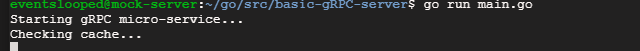
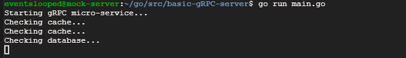
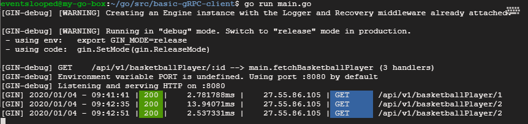
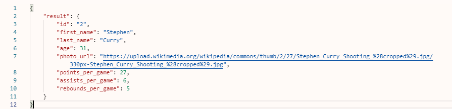

Setting up GORM
Continuing from the app we created in Part 1
PostgreSQL is one of the most popular database choices today because it is free and has most of the features that the big guns like Microsoft SQL Server and Oracle offer. To connect our microservice to PostgreSQL, we can simplify our life by using an ORM for GO called GORM… GO-ORM get it?
Let's upgrade the gRPC microservice we created in Part 1 to use an actual database instead of just cache.
First, let’s create our persistence model
We will need to install the github.com/jinzhu/gorm package. So run:
go get github.com/jinzhu/gorm
The BasketballPlayer model contains all of the data we want to persist. For things like ID and other technicallities we can embed another type, let’s call it BasePersistenceModel. You are free to use the default gorm.Model, but you will get several columns you may or may not need like updated_at, created_at and deleted_at. You will also not be able to change the type of the column ID. This is why I like to create my own base model.
type BasePersistenceModel struct {
ID uint64 `gorm:"type:int;primary_key"`
}
type BasketballPlayer struct {
BasePersistenceModel //gorm.Model can be used if you don't mind ID being an integer
FirstName string
LastName string
Age int32
PhotoUrl string
PointsPerGame int32
AssistsPerGame int32
ReboundsPerGame int32
}You may ask, why int32 is used here instead of the default int? Simply, because our generated gRPC model uses int32 and I did not feel like doing any conversion. What is the difference?
We have a small problem here, our gRPC model is not the same as our persistence model. Therefore, we will need to be able to convert between these two. Let’s add two methods to help us do this:
func (em *BasketballPlayer) GetgRPCModel() basketBallPlayer.Player {
return basketBallPlayer.Player{
Id: strconv.FormatUint(em.ID, 10),
FirstName: em.FirstName,
LastName: em.LastName,
Age: em.Age,
PhotoUrl: em.PhotoUrl,
PointsPerGame: em.PointsPerGame,
AssistsPerGame: em.AssistsPerGame,
ReboundsPerGame: em.ReboundsPerGame,
}
}
func (em *BasketballPlayer) From(gRPCModel basketBallPlayer.Player) {
u, e := strconv.ParseUint(gRPCModel.Id, 10, 64)
if e != nil {
panic("incorrect ID from gRPC")
}
em.ID = u
em.FirstName = gRPCModel.FirstName
em.LastName = gRPCModel.LastName
em.Age = gRPCModel.Age
em.PhotoUrl = gRPCModel.PhotoUrl
em.PointsPerGame = gRPCModel.PointsPerGame
em.AssistsPerGame = gRPCModel.AssistsPerGame
em.ReboundsPerGame = gRPCModel.ReboundsPerGame
}Putting this all together, we have BasketballPlayer.go below, which we can put in our models folder:
Finally, let’s update our main.go
First, we need to add proper package references to main.go. Let’s the following:
"github.com/jinzhu/gorm"
_ "github.com/jinzhu/gorm/dialects/postgres"The second line adds support for the database of your choosing. Don’t forget to add it, or you will get a cryptic error that isn’t easy to understand. Here you will find a list of supported databases by gorm.
Second, we need to add add a few package-level variables and a way to initialize them:
var db *gorm.DB
const dbPath = "host=34.84.26.219 user=postgres password=somecoolpasswordhere"
func init() {
var e error
db, e = gorm.Open("postgres", dbPath)
defer db.Close()
if e != nil {
panic("failed to connect to database")
}
db.AutoMigrate(&models.BasketballPlayer{}) //this will create a table in your database if it isn't there already
}Lastly, let’s update our handler so that it checks cache for data first and if not found, tries to fetch data from database:
func (*server) GetBasketballPlayer(ctx context.Context, r *basketBallPlayer.PlayerRequest) (*basketBallPlayer.PlayerResponse, error) {
id := r.GetId()
fmt.Println("Checking cache...")
playerVal, found := c.Get(id)
if found {
player := playerVal.(*basketBallPlayer.Player)
return &basketBallPlayer.PlayerResponse{
Result: player,
}, nil
} else {
fmt.Println("Checking database...")
db, e := gorm.Open("postgres", dbPath)
defer db.Close()
if e != nil {
panic(fmt.Sprintf("failed to connect to database: %v", e))
}
var p models.BasketballPlayer
if e = db.First(&p, id).Error; e != nil {
return nil, fmt.Errorf("could not find player with id: %v", id)
} else {
gRPCResult := p.GetgRPCModel()
c.Set(id, &gRPCResult, cache.DefaultExpiration)
return &basketBallPlayer.PlayerResponse{
Result: &gRPCResult,
}, nil
}
}
}Update: I improved caching slightly from Part 1, the code now stores pointers in cache instead of copying full values.
Putting all the pieces into our app from Part 1 we get:
I added one row into the database for testing purposes:
Sending a request to our API for player with Id of 1, gives us:

Sending another request for a player with Id of 2 (this one is from our database):

Now, let’s take a look at our Gin API. I made a third request for player with Id of 2 to see if we get the expected speed-up from cache. And we do indeed:

Voila! It works as expected!

Go Warriors! :)